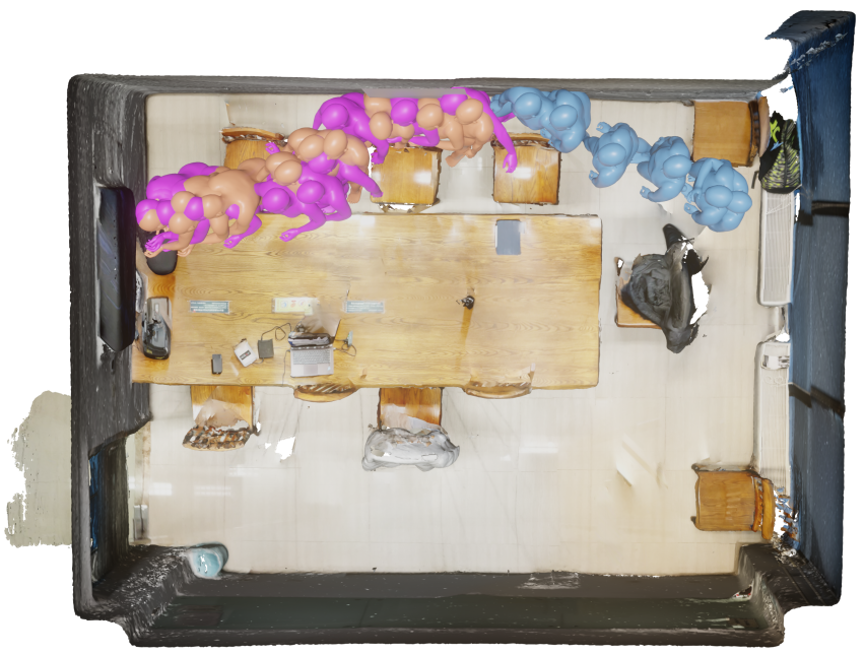
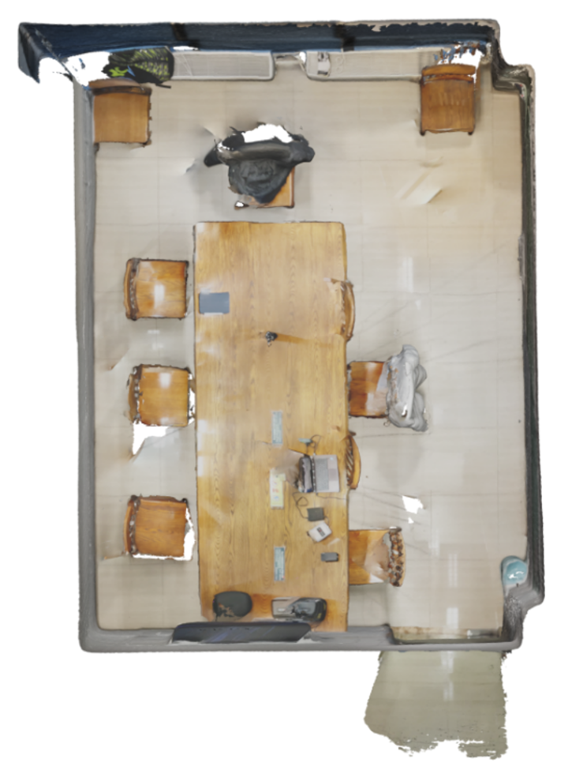
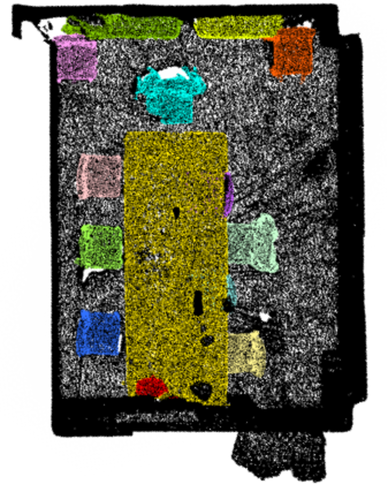

Case 1
Seminar room
灵机亦动
在绕过桌子到达目标椅子的过程中表现出色。它预测的动作合理且符合实际情况，所遵循的路径与真实路径相近，并且生成的坐下姿势精准自然。最终呈现出流畅且真实的动作序列，能够很好地适应周围的空间和物体。


SIF3D
在物体的摆放位置和运动方式上都存在问题。它无法很好地引导物体绕过障碍物，因此会遗漏与目标物体相关的重要动作。此外，SIF3D 还存在现实感不足的问题，例如让主体穿过桌子，表明它对空间和形状的理解不够准确。




